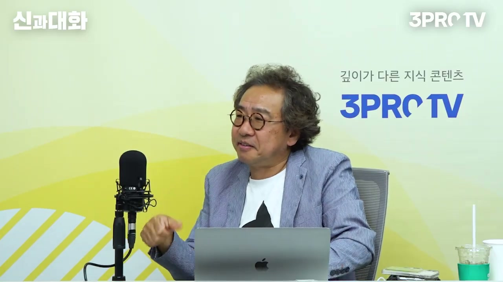
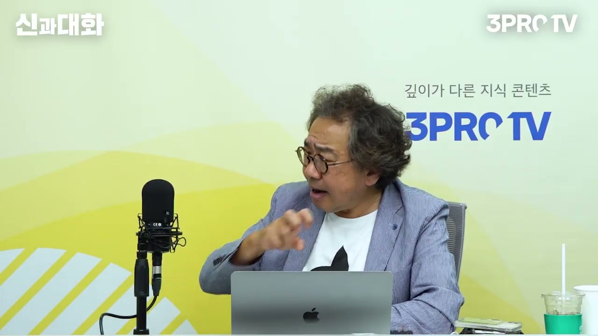
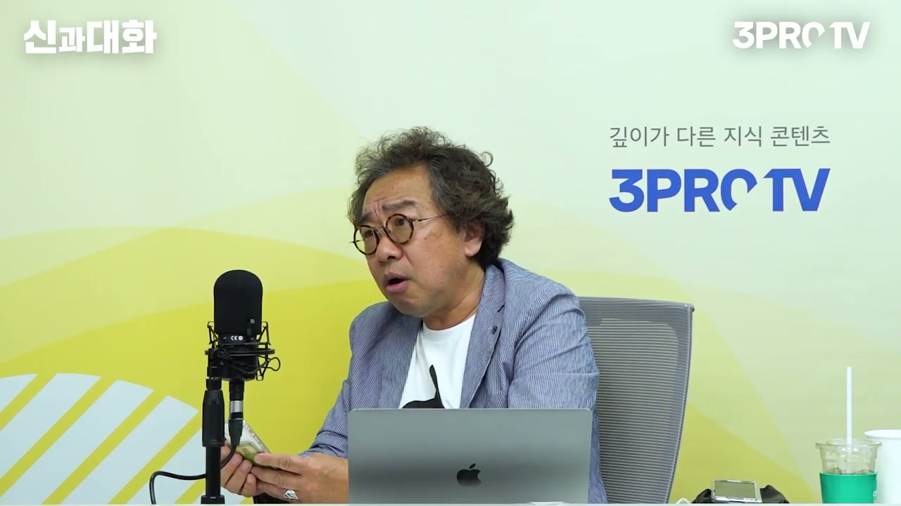
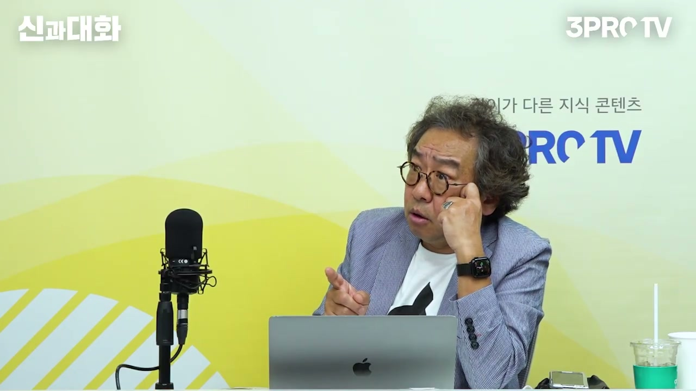
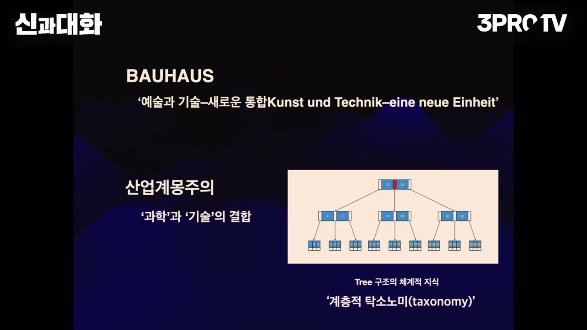
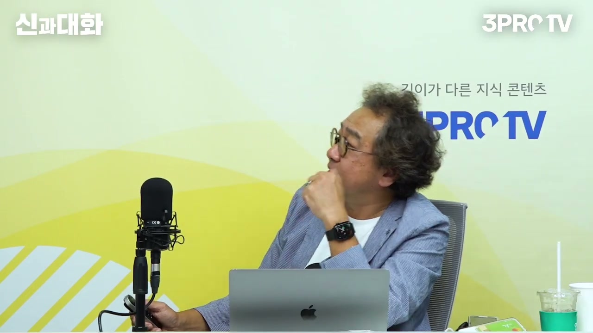
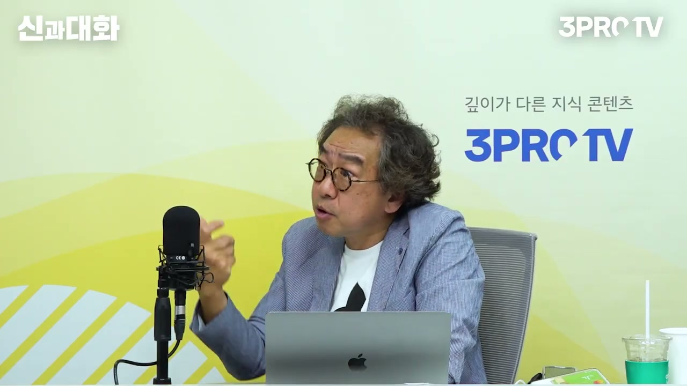
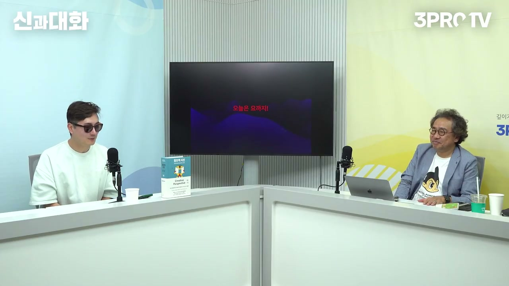
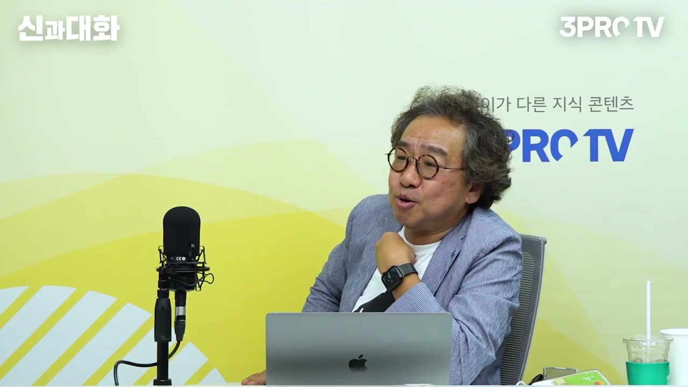

이 글은 전체 3편 중 3편입니다. 긴 영상을 주제 흐름에 맞춰 나누어 정리했습니다.
채널: 삼프로TV 3PROTV | 길이: 1:30:47 | 날짜: 20230708
이 글은 전체 3편 중 3편입니다.








이번 3편은 앞선 논의를 마무리하면서, 창조성이라는 개념이 어디서 생겨났고 오늘날 어떤 의미를 가지는지 설명하는 결론부다. 앞선 파트에서는 산업계몽주의, 과학과 기술의 결합, 체계적 지식, 조형적 사고 같은 개념이 깔렸다. 이번 파트에서는 그 흐름이 바우하우스에서 어떻게 예술·기술·감각·사물의 통합으로 바뀌는지를 보여준다. 최종적으로는 애플, GUI, GPU, ChatGPT, AI 인터페이스까지 연결되며 “창조성은 편집의 역사”라는 결론으로 수렴한다.
김 교수는 추상화를 설명하면서 “작곡가듯이 우리도 그림을 그릴 수 있다”는 발상에서 출발한다. 이는 시각예술을 음악처럼 생각할 수 있다는 의미이고, 이미 감각의 교차편집이 시작되고 있음을 보여준다. 칸딘스키와 클레는 추상화, 조형적 사고, 감각 간 변환을 대표하는 인물로 등장한다. 중요한 것은 이들이 단독 천재로만 존재한 것이 아니라 바우하우스라는 공동의 장 안에서 함께 일했다는 점이다.
김 교수는 바우하우스를 당대 최고의 아방가르드 예술가들이 모인 도시이자 학교로 설명한다. 미술가, 건축가, 연극인, 도예가, 음악적 사고를 가진 사람들이 한곳에서 서로의 감각과 지식을 교차시켰다. 그 결과 예술은 더 이상 대상을 정확히 재현하는 문제가 아니라, 다른 감각과 다른 분야를 어떻게 편집하느냐의 문제가 되었다. 이 지점에서 창조성은 개인의 재능보다 관계와 편집의 구조로 이해된다.
바우하우스 교장 발터 그로피우스의 위대함은 제도적·재정적 난관 속에서도 예술가들을 모았다는 데 있다. 전쟁 뒤 독일은 인플레이션이 심했고, 학교를 운영할 돈도 충분하지 않았다. 그런데도 그로피우스는 칸딘스키, 클레 같은 사람들을 포함해 당대 최고 수준의 전위 예술가들을 교사로 끌어들였다. 김 교수는 그래서 “교장이 위대하다”고 평가한다.
여기에 개인적 동기의 이야기로 알마 말러가 등장한다. 알마는 구스타프 말러의 부인이었고, 젊은 그로피우스는 그녀에게 사랑에 빠졌다고 설명된다. 그로피우스는 말러를 찾아가 결투하자는 식의 극적인 상황까지 벌였고, 결국 알마에게 선택을 요구했다는 식으로 이야기가 전개된다. 알마가 그로피우스에게 남긴 “당신이 성공할수록 당신은 나의 것이 된다”는 취지의 말은 훗날 그로피우스를 움직인 강력한 동기로 해석된다.
이 사례는 돈보다 강한 동기가 무엇인지를 보여준다. 김 교수는 나중에 돈의 목적을 이야기할 때도 이 일화를 다시 불러온다. 사람은 막연한 성공이 아니라, 자기 삶을 움직이는 선명한 동기가 있을 때 강력하게 일한다. 바우하우스의 탄생도 제도나 이념만이 아니라 사랑, 욕망, 경쟁, 인정 욕구 같은 인간적 동기와 얽혀 있다는 점이 강조된다.
김 교수는 바우하우스로 바로 가지 않고 독일 음악의 맥락을 먼저 꺼낸다. 당시 오페라는 이탈리아가 워낙 강했고, 독일은 언어적 열등감을 가지고 있었다고 설명한다. 독일어는 타격음과 자음이 많아 노래에 잘 어울리지 않는 언어로 묘사된다. 그래서 독일어를 음악적으로 가장 멋있게 만든 슈베르트의 가곡이 대단한 성취로 평가된다.
이후 바그너가 등장한다. 바그너는 음악의 경계를 넘어 문학, 연극, 무대, 서사를 모두 합치는 종합예술을 주장한 인물로 제시된다. 김 교수는 이 흐름이 바우하우스에 오면 더 넓어진다고 본다. 음악과 문학, 연극을 합치는 수준을 넘어 물건, 건축, 도자기, 생활의 사물까지 모두 예술과 연결하자는 시도로 확장되기 때문이다.
김 교수의 핵심 명제 중 하나는 바우하우스에서 시대가 “재현”에서 “편집”으로 바뀌기 시작했다는 것이다. 재현은 대상을 있는 그대로 그리거나 모사하는 일이다. 하지만 바우하우스의 예술가들은 서로 다른 예술가들이 가진 감각과 사고를 모아 새로운 형태로 편집했다. 이때 편집은 단순한 배열이 아니라, 감각과 사물과 기술과 삶을 새 관계로 묶는 방식이다.
이 전환 속에서 “창조성”이라는 말이 생긴다고 김 교수는 말한다. 즉 창조성은 어떤 천재가 혼자 번뜩이는 능력이 아니라, 재현의 시대가 끝나고 편집의 시대가 열리면서 등장한 역사적 개념이다. 바우하우스가 디자인 학교로 불리는 이유도 단지 예쁜 물건을 만들었기 때문이 아니다. 생활의 사물을 감각적으로 편집하고, 사물에 인간의 감성을 스며들게 하는 방식을 만들어냈기 때문이다.
김 교수는 자신이 바우하우스를 이렇게 해석하는 사람이 없었다고 말한다. 그 이유를 스스로 “외국인이기 때문”이라고 설명한다. 독일인은 독일 문화를 내부에서 살아왔기 때문에 그것을 너무 자연스럽게 받아들이고, 오히려 구조를 낯설게 보지 못한다. 반면 한국인인 그는 독일어도 하고 영어도 하며, 독일 문화가 일본을 통해 한국에 들어온 역사까지 알고 있다.
이런 외부자의 위치는 단점이 아니라 장점이 된다. 그는 독일 사람들에게 “나는 당신들에 대해 많이 안다. 당신들은 나에 대해 무엇을 아느냐”고 말할 수 있다고 한다. 20년 후 누가 더 창조적인 이야기를 할 수 있겠느냐는 질문도 이 맥락에서 나온다. 많이 배웠고, 여러 문화의 경로를 알고, 자기 관점에서 재해석할 수 있는 사람이 더 풍부한 데이터를 가지고 있다는 것이다.
한국이 지금 문화적으로 잘 나가는 이유도 같은 방식으로 설명된다. 한국은 서구를 많이 배웠고, 그 속을 잘 안다. 동시에 이제는 자부심도 생겼기 때문에 서구를 한국의 관점에서 다시 해석할 수 있다. 이것이 블랙핑크나 BTS 같은 세계적 현상으로 이어진다고 김 교수는 본다.
중요한 것은 이것이 단순한 모방이 아니라는 점이다. 한국은 서구의 형식과 데이터를 오래 학습했고, 거기에 자기 감각과 사회적 경험을 더해 새롭게 편집했다. 그래서 전 세계에 없던 새로운 형태를 만들어낼 수 있었다. 김 교수는 독자들에게 자신감을 가지라고 하지만, 진행자가 “틀리시면 어떡하느냐”고 농담하자 자신도 섬에서 오래 살며 약간 겸손해졌다고 웃어넘긴다.
이 파트에서 가장 중요한 개념은 “감각의 교차편집”이다. 김 교수는 창조의 핵심이 생각의 흐름뿐 아니라 감각의 차원을 바꾸어 편집하는 데 있다고 말한다. 색깔을 듣고, 소리를 보고, 촉각을 훈련하는 것이 그 예다. 이는 시각, 청각, 촉각을 각각 따로 쓰는 것이 아니라 서로 다른 감각을 교차시켜 새로운 의미와 감성을 만드는 방식이다.
감각의 교차편집은 추상화와도 연결된다. 추상화는 대상을 그대로 그리는 것이 아니라, 감각과 형태의 단위를 새로 만들고 조합하는 일이다. 이런 방식이 발전하면 디자인이 된다. 김 교수는 좋은 디자인이란 기능만 좋거나 모양만 예쁜 것이 아니라, 물건을 통해 어떤 감정이 스며들게 하는 것이라고 설명한다.
김 교수는 애플 제품을 만질 때 사람들이 행복해지는 이유를 감각 편집으로 설명한다. 아이폰이나 애플 제품의 매력은 단지 기능성 때문이 아니다. 손에 닿는 감각, 시각적 형태, 조작의 부드러움, 사용자가 느끼는 감정이 함께 편집되어 있기 때문이다. 그래서 애플은 바우하우스적 감각 편집의 현대적 사례가 된다.
책상 예시도 같은 논리다. 단순히 싸고 기능적인 책상은 물건으로서 기능할 수는 있지만, 좋은 나무를 수십 년 말리고 잘 갈아 만든 책상은 촉각의 즐거움을 준다. 그 촉각은 마치 아름다운 노래를 듣는 느낌과 연결될 수 있다. 좋은 노래를 들을 때의 느낌과 좋은 책상을 만질 때의 느낌이 어느 순간 일치하는 사람이 있고, 김 교수는 그런 감각의 일치가 취향이라고 말한다.
김 교수는 한 개인을 완성시키는 여러 요인 중 가장 중요한 것이 취향이라고 말한다. 독일어의 Individualität, 개인성, 그리고 Geschmack, 취향이라는 개념이 개인이라는 개념이 만들어지는 시기와 비슷하게 등장했다고 설명한다. 사회적 지위는 개인의 본질이 아니다. 교수, 사장, 장관 같은 직함은 은퇴하거나 시간이 지나면 “전”이라는 말이 붙는 껍데기가 된다.
특히 은퇴 이후의 삶이 길어진 현대에서는 이 문제가 더 심각해진다. 예전에는 평균수명이 짧아 정년 이후의 시간이 길지 않았지만, 지금은 65세에 은퇴해도 90세까지 살 수 있다. 그러면 30년 동안 “전 교수”, “전 사장”, “전 장관”으로 살아야 하는 상황이 생긴다. 김 교수는 이런 사회적 아이덴티티가 아니라 “나는 누구인가”를 구성하는 것이 취향이라고 본다.
김 교수는 “돈 버는 목적이 무엇이냐”고 묻는다. 그의 답은 자기 취향을 완성하기 위해서라는 것이다. 돈을 벌려면 제대로 벌어야 하지만, 그 목적이 분명하지 않으면 돈은 오히려 사람을 불행하게 만들 수 있다. 막연히 “일단 돈을 벌어야겠다”는 생각만으로는 삶의 방향이 생기지 않는다.
그는 3프로TV가 경제 이야기를 많이 하는 채널임을 의식하면서도 “돈 벌어서 뭐 할 건데”라는 질문을 던진다. 돈을 버는 목적이 선명해야 돈도 열심히 벌 수 있다. 알마 말러와 그로피우스의 이야기처럼, 강력한 동기는 행동을 밀어붙이는 힘이 된다. 돈을 벌고 싶다면 돈 자체가 아니라 그 돈으로 어떤 취향과 삶을 완성할 것인지가 분명해야 한다.
김 교수는 애플의 성공을 터치의 혁명으로 본다. 원래 기계와 인간의 상호작용은 폭력적이었다. 키보드를 두드리고, 자판기를 누르고, 타자기를 치는 방식은 모두 기계를 “때리는” 방식에 가깝다. 그런데 애플은 컴퓨터와 인간의 상호작용을 터치로 바꾸었다.
터치는 기계와 인간의 관계를 부드럽게 만든다. 손가락으로 화면을 만지고, 밀고, 확대하고, 움직이는 방식은 명령어를 외워 치는 것과 완전히 다르다. 이 변화는 단순히 기술적 편리함이 아니라 감각의 변화다. 김 교수는 이 감각적 변화가 바우하우스의 감각 교차편집과 연결된다고 본다.
산업계몽주의는 과학과 기술의 결합으로 체계적 지식을 만들어냈다. 김 교수는 그 지식을 트리 구조, 계층적 택소노미로 설명한다. 맨 위에 큰 분류가 있고, 아래로 하위 분류가 내려가는 구조다. 우리가 학교에서 배운 체계적 지식은 대체로 이런 계층적 구조를 따른다.
반면 바우하우스가 만들어낸 지식은 네트워크적이다. 예술, 기술, 사물, 감각, 생활이 서로 연결되며 지식이 만들어진다. 김 교수는 자기 책도 일부러 그런 트리 구조로 쓰지 않았다고 말한다. 검색하면 다 나오는 정보를 계층적으로 정리하는 것은 의미가 약하고, 좋은 책은 독자가 자기 생각을 하게 만드는 책이라는 것이다.
김 교수는 자신의 책이 “의식의 흐름”처럼 쓰였느냐는 질문에 대해, 재미있는 점이 바로 거기에 있다고 설명한다. 책을 읽다가 “왜 여기서 이런 생각을 하지?”라는 의문이 생기면 좋은 책이라는 것이다. 동의하지 않아도 괜찮고, 오히려 동의하지 않으면 더 좋다고 말한다. 독자가 자기 생각을 하게 만드는 것이 좋은 책의 역할이기 때문이다.
그는 계몽하는 책은 좋은 책이 아니라고 단호하게 말한다. 검색하면 나오는 지식을 두껍게 쌓아놓는 방식은 더 이상 큰 의미가 없다. 지식을 전달하는 책보다 사고를 자극하는 책이 중요하다. 이 관점 자체가 트리 구조 지식에서 네트워크형 지식으로 이동한 시대의 독서론이다.
김 교수는 추상화에도 두 종류가 있다고 말한다. 칸딘스키처럼 곡선적이고 감각적인 추상화가 있는 반면, 데 스틸, 몬드리안, 구축주의처럼 기하학적 추상이 있다. 역사적으로는 기하학적 추상이 승리했다고 설명한다. 칸딘스키가 최초의 추상화가라는 타이틀은 남았지만, 이후 편집의 단위와 체계를 만드는 데는 기하학적 추상이 큰 역할을 했다는 것이다.
그렇다고 칸딘스키가 무의미하다는 말은 아니다. 김 교수는 칸딘스키를 본질적으로 따뜻한 사람, 연애를 잘하는 사람으로 묘사한다. 비즈니스를 잘하는 사람은 아니었다고 농담처럼 말한다. 이 대목은 창조적 인간을 경제적 성공이나 사업 감각으로만 평가하지 않으려는 태도와도 연결된다.
김 교수는 지식 구조의 차이를 설명하기 위해 도끼, 망치, 톱, 나무 중 하나를 빼라는 질문을 던진다. 많은 사람들은 도끼, 망치, 톱이 도구이고 나무가 대상이므로 나무를 뺄 수 있다고 답한다. 이는 대상을 상위 개념과 하위 개념으로 분류하는 트리 구조의 지식이다. 도구라는 범주 안에 도끼, 망치, 톱이 들어가고, 나무는 다른 범주에 속한다.
하지만 시베리아 벌목꾼에게 물으면 나무를 절대 빼지 않는다고 김 교수는 말한다. 나무가 없으면 도끼도 톱도 아무 소용이 없기 때문이다. 이들은 “벌목”이라는 구체적 행위 속에서 대상을 분류한다. 김 교수는 이런 지식이 네트워크형 구조, 폭소노미적 구조라고 설명한다.
마우스는 단순한 입력장치가 아니라 조형적 사고를 컴퓨터 안으로 들여온 도구다. 김 교수는 더글러스 엥겔바트가 1968년에 마우스를 발명했고, 제록스 연구소가 이를 실용화하려 했다고 설명한다. 이후 스티브 잡스가 제록스 연구소의 아이디어를 가져와 애플에서 구현했다는 익숙한 이야기가 이어진다. 중요한 것은 이 과정이 단순한 기술 도입이 아니라 인터페이스 혁명이라는 점이다.
마우스 이전에는 컴퓨터를 명령어와 문장으로 조작해야 했다. 디렉토리로 들어가고, cd 같은 명령을 외우고, 폴더와 파일을 문장처럼 입력해야 했다. 인간은 조형적 사고를 하는데 컴퓨터는 자꾸 문장으로 조작하라고 했으니 어려웠다. 마우스와 GUI는 이 불일치를 해결하며, 생각을 시각적·공간적으로 조작할 수 있게 했다.
김 교수는 자판의 불합리함을 한국어 예시로 설명한다. 한국어에서 자주 쓰이는 글자 중 하나인 쌍시옷을 치려면 시프트와 시옷을 함께 눌러야 한다. 그런데 시프트와 손가락의 배치가 직관적이지 않아 불편하다는 식으로 설명한다. 그는 이것을 매일 반복하는 불합리함으로 지적한다.
이 예시는 단순한 타자 불편 이야기가 아니다. 인간의 언어, 손가락, 자판, 기계의 배치가 서로 잘 맞지 않는다는 점을 보여준다. 인터페이스는 인간의 몸과 감각에 맞아야 하는데, 오래된 자판 구조는 1800년대의 기계식 자판 배열을 그대로 이어받았다. 마우스와 GUI는 이런 기계 중심 인터페이스에서 인간 중심 인터페이스로 넘어가는 계기가 된다.
김 교수는 GUI가 있었기 때문에 GPU도 가능했다고 연결한다. 과거에는 컴퓨터 그래픽을 CPU가 처리했지만, 그래픽이 복잡해지면서 그래픽카드가 필요해졌다. 그래픽카드가 발전해 GPU가 되었고, 오늘날 AI와도 연결된다. 김 교수는 어떤 의미에서는 GPU가 인간의 조형적 사고를 가장 잘 표현하는 프로세서일지도 모른다고 말한다.
이 주장은 기술사를 엄밀히 설명하려는 것이라기보다, 인간 사고의 형태가 기술 발전에 어떻게 반영되는지를 말하려는 것이다. 인간은 단순한 문장형 명령보다 형태, 이미지, 공간, 관계를 통해 사고한다. GUI와 GPU는 그런 조형적 사고를 컴퓨터 화면에서 구현하는 방향으로 발전했다. 그래서 마우스, GUI, GPU, AI는 모두 인터페이스 혁명의 연속선에 놓인다.
김 교수는 ChatGPT 같은 AI가 대답을 잘 보여준다고 해서 너무 감동하지 말라고 말한다. 인터페이스 혁명의 관점에서 보면 아직 갈 길이 멀다는 것이다. 인간과 인간 사이의 상호작용은 언어만으로 이루어지지 않는다. 터치만으로도 충분하지 않고, 냄새, 표정, 말투, 몸짓, 분위기 같은 비언어적 신호가 함께 작동한다.
그는 언어적 의미 구조로 전달되는 정보는 7%에 불과하고, 나머지 93%는 비언어적 신호라고 말한다. 이 수치는 인간 상호작용에서 말의 내용보다 비언어적 신호가 훨씬 크다는 점을 강조하기 위한 장치다. AI가 진정한 혁명이 되려면 이 비언어적 신호들의 상호작용까지 잡아낼 수 있어야 한다. 단순히 예쁜 가짜 인물이나 이미지를 만들어내는 것은 금방 지루해지고, 실제 인간과의 상호작용에서 오가는 디테일을 담지 못한다.
김 교수는 자신도 예전에는 창조성이 오래전부터 당연히 쓰인 말인 줄 알았다고 말한다. 레오나르도 다빈치 같은 인물을 생각하면 당연히 창조적이라는 말을 붙이고 싶기 때문이다. 하지만 실제로는 당시 사람들이 지금처럼 창조성이라는 단어를 쓰지 않았고, 이 단어는 불과 100년 사이에 폭발적으로 사용되었다고 설명한다. 창조성이라는 말 자체가 근대 이후 특정한 지식 구조와 편집 구조 속에서 부상한 것이다.
이것은 부모들의 교육 고민과도 연결된다. 많은 부모가 아이가 창조적이어야 한다고 생각하고 유튜브를 찾아보지만, 감각의 교차편집을 이해하지 못하면 창조성 교육의 핵심을 놓친다. 예술이 중요한 이유도 바로 여기에 있다. 예술은 단순히 그림을 잘 그리고 음악을 잘하는 기술이 아니라, 감각을 다른 감각으로 바꾸고 서로 연결하는 능력을 길러준다.
스티브 잡스가 예술이 중요하다고 말한 것은 유명하지만, 김 교수는 그가 그것을 완전히 이론적으로 알고 말한 것은 아니라고 본다. 잡스는 직관적으로 혹은 흐릿하게 중요한 것을 알았을 수 있다. 그러나 김 교수는 자신의 책과 해석이 그 배후의 구조를 더 정확히 파악한다고 주장한다. 이때 다시 한국인이라는 외부자의 위치가 중요해진다.
그는 자신이 한국에서 태어났기 때문에 영어도 해야 했고, 도구도 익혀야 했고, 여러 문화적 경로를 통과해야 했다고 말한다. 그런 핸디캡이 오히려 서양 사람들이 못 하는 생각을 하게 만들었다는 것이다. 한국 사람들이 겪은 고통과 기업들의 시행착오가 오늘 우리를 행복하게 해준 면도 있다고 말한다. 이는 한국의 추격과 학습 경험을 창조성의 자산으로 보는 관점이다.
후반부에서 김 교수는 자신의 책 『창조적 시선』에 대해 이야기한다. 그는 이 책에 10년을 갈아 넣었다고 표현한다. 출판사가 이 책에 투자를 많이 했고, 사진이나 제작 방식 등에서도 비용이 많이 들어간 것으로 설명된다. 책 제작 원가만 65,000원이라는 언급은 이 책이 단순한 얇은 대중서가 아니라, 물리적 완성도까지 고려한 결과물이라는 주장으로 이어진다.
건축비 비유도 나온다. 30층까지 올리는 건 오히려 면적당 비용이 싸질 수 있지만, 50층, 60층, 100층으로 올라가면 어느 순간부터 비용이 급격히 증가한다. 책도 마찬가지로 일정 수준을 넘어서면 가격과 제작 비용이 급증한다는 것이다. 출판사는 얇고 싸게 가자고 했지만, 김 교수는 자기 인생을 갈아 넣는다는 마음으로 만들었다고 말한다.

진행자는 『창조적 시선』을 오늘 소개한 책으로 정리하며, 전체 내용을 보려면 서점이나 인터넷을 통해 볼 수 있다고 말한다. 또 이런 책은 지금까지 없었다는 식으로 평가하고, 예전의 『사피엔스』와 비교하는 말도 덧붙인다. 김정운 교수의 이번 책을 꼭 읽어보라고 권하며 대화가 마무리된다. 김 교수는 오랜만에 출연해 흥분해서 많이 말한 것 같다고 사과하면서도, “겸손에 너무 지겨워졌다”는 농담으로 자신의 스타일을 드러낸다.
마지막에는 섬에 한번 찾아가겠다는 이야기, 7월 초에는 가족들이 떠나 혼자가 된다는 말, 함께 무엇인가 해볼 수 있겠다는 농담이 이어진다. 진행자는 김 교수에게 다시 감사 인사를 전하고 다음 만남을 기약한다. 이 마무리는 강의의 무게감과 예능적 대화의 가벼움이 함께 있는 장면이다. 전체적으로 3편은 창조성 개념의 역사적 계보를 책 소개와 연결하며 마감한다.
“재현에서 편집으로 시대가 바뀌기 시작하는 거예요.”
“크리에이티비티, 창조성이라는 단어가 생기는 거예요.”
“내가 외국인이기 때문에 나는 이렇게 해석할 수 있어요.”
“한국이 잘 나가는 이유도 우리 속을 너무 잘 알아서 그래요.”
“감각의 교차편집이라는 게 중요해요.”
“색깔을 듣고 소리를 본다.”
“한 개인을 완성시키는 것은 취향이에요.”
“돈 버는 목적이 뭐예요? 자기 취향을 완성하기 위해서 하는 거예요.”
“디자인이라는 것은 느낌이 스며드는 거예요.”
“바우하우스를 디자인 학교다, 이렇게 얘기하는 거죠.”
“컴퓨터와 인간 사이에 인터페이스 혁명이라고 얘기할 수 있다.”
“언어적인 의미 구조로 정보 전달이 되는 건 7%에 불과해요.”
“나머지 93%는 비언어적인 신호들의 상호작용이에요.”
“AI가 아직도 갈 길은 멀지만, 우리는 엄청난 지식혁명의 와중에 있다.”
“좋은 책은 내 생각을 할 수 있게 만들어주는 책이에요.”
이번 3편의 핵심은 창조성이 개인의 천재성보다 “편집 능력”에 가깝다는 주장이다. 김정운 교수는 칸딘스키와 클레의 추상화, 바우하우스의 예술·기술 통합, 감각의 교차편집, 애플의 터치 인터페이스, GUI와 GPU, ChatGPT와 AI까지 하나의 긴 흐름으로 묶는다. 그 흐름에서 창조성은 무언가를 새로 만드는 신비한 능력이 아니라, 감각과 지식과 사물을 서로 다른 차원에서 다시 연결하는 능력이다.
실용적 시사점은 세 가지다. 첫째, 창조성을 키우려면 지식을 많이 외우는 것만으로는 부족하고, 감각을 다르게 연결하는 경험이 필요하다. 둘째, 돈과 성공의 목적은 사회적 지위가 아니라 자기 취향을 완성하는 데 있어야 한다. 셋째, AI 시대에도 인간의 감각, 비언어적 상호작용, 취향, 감성은 여전히 중요한 영역으로 남아 있다.
결국 김 교수의 메시지는 “예술이 왜 중요한가”에 대한 대답으로도 읽힌다. 예술은 장식이 아니라 감각의 편집 능력을 키우는 훈련이다. 디자인은 예쁜 물건 만들기가 아니라 감성을 사물에 스며들게 하는 일이다. 창조성은 책상, 스마트폰, 마우스, GUI, AI 같은 기술의 역사 속에서도 계속 감각과 인터페이스의 문제로 되돌아온다.
댓글
GitHub 이슈 기반 댓글 시스템입니다.